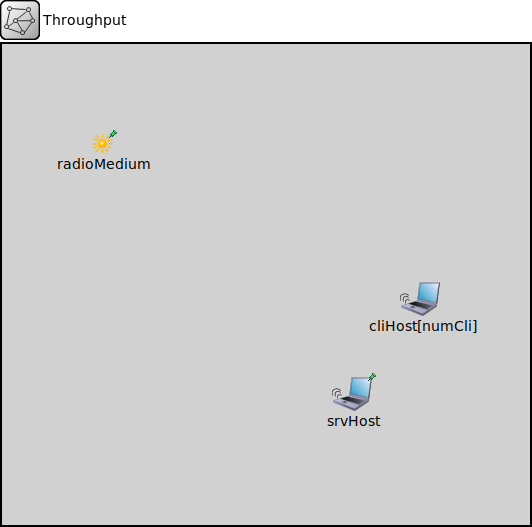

Package: inet.examples.wireless.testnewmac
Throughput
network(no description)
Usage diagram
The following diagram shows usage relationships between types. Unresolved types are missing from the diagram.
Parameters
| Name | Type | Default value | Description |
|---|---|---|---|
| numCli | int |
Properties
| Name | Value | Description |
|---|---|---|
| isNetwork |
Unassigned submodule parameters
| Name | Type | Default value | Description |
|---|---|---|---|
| cliHost.interfaceTable.displayAddresses | bool | false |
whether to display IP addresses on links |
| cliHost.cli.interfaceTableModule | string | ||
| cliHost.cli.destAddress | string | "" |
destination MAC address, or module path name of destination station; empty means off |
| cliHost.cli.startTime | double | this.sendInterval |
time of sending the first request |
| cliHost.cli.stopTime | double | -1s |
time of finishing sending, negative values mean forever |
| cliHost.cli.localSAP | int | 0xf0 |
local service access point |
| cliHost.cli.remoteSAP | int | 0xf1 |
remote service access point |
| cliHost.cli.sendInterval | double | uniform(0s,1s) |
interval between sending requests |
| cliHost.cli.reqLength | int | 100B |
length of request packets |
| cliHost.cli.respLength | int | 1KiB |
length of response packets |
| cliHost.cli.stopOperationExtraTime | double | -1s |
extra time after lifecycle stop operation finished |
| cliHost.cli.stopOperationTimeout | double | 2s |
timeout value for lifecycle stop operation |
| cliHost.wlan.pcapRecorder.verbose | bool | true |
whether to log packets on the module output |
| cliHost.wlan.pcapRecorder.pcapFile | string | "" |
the PCAP file to be written |
| cliHost.wlan.pcapRecorder.fileFormat | string | "pcapng" | |
| cliHost.wlan.pcapRecorder.snaplen | int | 65535 |
maximum number of bytes to record per packet |
| cliHost.wlan.pcapRecorder.dumpBadFrames | bool | true |
enable dump of frames with hasBitError |
| cliHost.wlan.pcapRecorder.sendingSignalNames | string | "packetSentToLower" |
space-separated list of outbound packet signals to subscribe to |
| cliHost.wlan.pcapRecorder.receivingSignalNames | string | "packetReceivedFromLower" |
space-separated list of inbound packet signals to subscribe to |
| cliHost.wlan.pcapRecorder.dumpProtocols | string | "ethernetmac ppp ieee80211mac" |
space-separated list of protocol names as defined in the Protocol class |
| cliHost.wlan.pcapRecorder.packetFilter | object | "*" |
which packets are considered, matches all packets by default |
| cliHost.wlan.pcapRecorder.helpers | string | "" |
usable PcapRecorder::IHelper helpers for accept packettype and store/convert packet as specified linktype currently available: "inet::AckingMacToEthernetPcapRecorderHelper" |
| cliHost.wlan.pcapRecorder.alwaysFlush | bool | false |
flush the pcapFile after each write to ensure that all packets are captured in case of a crash |
| cliHost.wlan.pcapRecorder.displayStringTextFormat | string | "rec: %n pks" | |
| cliHost.wlan.mgmt.macModule | string |
The path to the MAC module |
|
| cliHost.mobility.subjectModule | string | "^" |
module path which determines the subject module, the motion of which this mobility model describes, the default value is the parent module |
| cliHost.mobility.coordinateSystemModule | string | "" |
module path of the geographic coordinate system module |
| cliHost.mobility.displayStringTextFormat | string | "p: %p\nv: %v" |
format string for the mobility module's display string text |
| cliHost.mobility.updateDisplayString | bool | true |
enables continuous update of the subject module's position via modifying its display string |
| cliHost.mobility.constraintAreaMinX | double | -inf m |
min x position of the constraint area, unconstrained by default (negative infinity) |
| cliHost.mobility.constraintAreaMinY | double | -inf m |
min y position of the constraint area, unconstrained by default (negative infinity) |
| cliHost.mobility.constraintAreaMinZ | double | -inf m |
min z position of the constraint area, unconstrained by default (negative infinity) |
| cliHost.mobility.constraintAreaMaxX | double | inf m |
max x position of the constraint area, unconstrained by default (positive infinity) |
| cliHost.mobility.constraintAreaMaxY | double | inf m |
max y position of the constraint area, unconstrained by default (positive infinity) |
| cliHost.mobility.constraintAreaMaxZ | double | inf m |
max z position of the constraint area, unconstrained by default (positive infinity) |
| cliHost.mobility.updateInterval | double | 0.1s |
the simulation time interval used to regularly signal mobility state changes and update the display |
| cliHost.mobility.faceForward | bool | true | |
| cliHost.mobility.cx | double |
x coord of the center of the circle |
|
| cliHost.mobility.cy | double |
y coord of the center of the circle |
|
| cliHost.mobility.cz | double | 0m |
z coord of the center of the circle |
| cliHost.mobility.r | double |
radius of the circle |
|
| cliHost.mobility.speed | double | 0mps |
speed of the host |
| cliHost.mobility.startAngle | double | uniform(0deg, 360deg) |
starting angle |
| srvHost.interfaceTable.displayAddresses | bool | false |
whether to display IP addresses on links |
| srvHost.sink.localSAP | int | 0xf1 | |
| srvHost.sink.stopOperationExtraTime | double | -1s |
extra time after lifecycle stop operation finished |
| srvHost.sink.stopOperationTimeout | double | 2s |
timeout value for lifecycle stop operation |
| srvHost.wlan.pcapRecorder.verbose | bool | true |
whether to log packets on the module output |
| srvHost.wlan.pcapRecorder.pcapFile | string | "" |
the PCAP file to be written |
| srvHost.wlan.pcapRecorder.fileFormat | string | "pcapng" | |
| srvHost.wlan.pcapRecorder.snaplen | int | 65535 |
maximum number of bytes to record per packet |
| srvHost.wlan.pcapRecorder.dumpBadFrames | bool | true |
enable dump of frames with hasBitError |
| srvHost.wlan.pcapRecorder.sendingSignalNames | string | "packetSentToLower" |
space-separated list of outbound packet signals to subscribe to |
| srvHost.wlan.pcapRecorder.receivingSignalNames | string | "packetReceivedFromLower" |
space-separated list of inbound packet signals to subscribe to |
| srvHost.wlan.pcapRecorder.dumpProtocols | string | "ethernetmac ppp ieee80211mac" |
space-separated list of protocol names as defined in the Protocol class |
| srvHost.wlan.pcapRecorder.packetFilter | object | "*" |
which packets are considered, matches all packets by default |
| srvHost.wlan.pcapRecorder.helpers | string | "" |
usable PcapRecorder::IHelper helpers for accept packettype and store/convert packet as specified linktype currently available: "inet::AckingMacToEthernetPcapRecorderHelper" |
| srvHost.wlan.pcapRecorder.alwaysFlush | bool | false |
flush the pcapFile after each write to ensure that all packets are captured in case of a crash |
| srvHost.wlan.pcapRecorder.displayStringTextFormat | string | "rec: %n pks" | |
| srvHost.wlan.mgmt.macModule | string |
The path to the MAC module |
|
| srvHost.mobility.subjectModule | string | "^" |
module path which determines the subject module, the motion of which this mobility model describes, the default value is the parent module |
| srvHost.mobility.coordinateSystemModule | string | "" |
module path of the geographic coordinate system module |
| srvHost.mobility.displayStringTextFormat | string | "p: %p\nv: %v" |
format string for the mobility module's display string text |
| srvHost.mobility.updateDisplayString | bool | true |
enables continuous update of the subject module's position via modifying its display string |
| srvHost.mobility.constraintAreaMinX | double | -inf m |
min x position of the constraint area, unconstrained by default (negative infinity) |
| srvHost.mobility.constraintAreaMinY | double | -inf m |
min y position of the constraint area, unconstrained by default (negative infinity) |
| srvHost.mobility.constraintAreaMinZ | double | -inf m |
min z position of the constraint area, unconstrained by default (negative infinity) |
| srvHost.mobility.constraintAreaMaxX | double | inf m |
max x position of the constraint area, unconstrained by default (positive infinity) |
| srvHost.mobility.constraintAreaMaxY | double | inf m |
max y position of the constraint area, unconstrained by default (positive infinity) |
| srvHost.mobility.constraintAreaMaxZ | double | inf m |
max z position of the constraint area, unconstrained by default (positive infinity) |
| srvHost.mobility.initialX | double | uniform(this.constraintAreaMinX, this.constraintAreaMaxX) | |
| srvHost.mobility.initialY | double | uniform(this.constraintAreaMinY, this.constraintAreaMaxY) | |
| srvHost.mobility.initialZ | double | nanToZero(uniform(this.constraintAreaMinZ, this.constraintAreaMaxZ)) | |
| srvHost.mobility.initialLatitude | double | nan deg | |
| srvHost.mobility.initialLongitude | double | nan deg | |
| srvHost.mobility.initialAltitude | double | 0m | |
| srvHost.mobility.initialHeading | double | 0deg | |
| srvHost.mobility.initialElevation | double | 0deg | |
| srvHost.mobility.initialBank | double | 0deg | |
| srvHost.mobility.initFromDisplayString | bool | true |
enables one time initialization from the subject module's display string |
| srvHost.mobility.updateFromDisplayString | bool | true |
enables continuous update from the subject module's display string for dragging and rotating it |
| radioMedium.neighborCache.refillPeriod | double |
Source code
network Throughput { parameters: int numCli; submodules: cliHost[numCli]: ThroughputClient { parameters: @display("r=,,#707070"); } srvHost: ThroughputServer { parameters: @display("p=350,350;r=,,#707070"); } radioMedium: Ieee80211ScalarRadioMedium { parameters: @display("p=100,100;is=s"); } }File: examples/wireless/testnewmac/Throughput.ned
 This documentation is released under the Creative Commons license
This documentation is released under the Creative Commons license